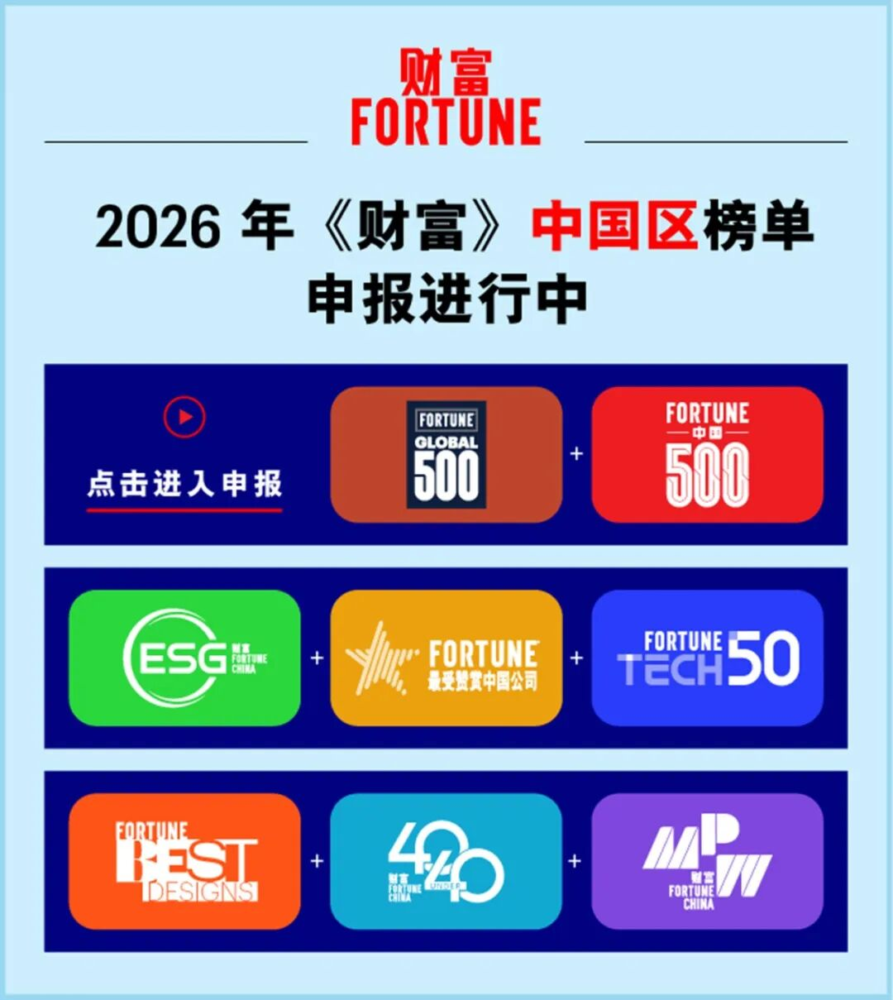

🧠 巴菲特：如果不具备这项能力，等于埋没自身潜能
Buffett Without This Ability You Are Wasting Your Own Potential
出色的沟通communication[kəˌmjuːnɪˈkeɪʃən] n. 沟通能力是商业成功的重要因素，尤其随着人工智能的兴起，这一能力显得愈发重要。如今，即便是全球最顶尖的科技和人工智能公司，也愿意开出数百万美元年薪，聘请recruit[rɪˈkruːt] v. 招募；聘请高阶公关与沟通管理人才。
史上最具传奇色彩的投资人investor[ɪnˈvestər] n. 投资者之一沃伦·巴菲特，同样坚信沟通是一项至关重要的能力。
沃伦·巴菲特一直强调沟通能力的重要性importance[ɪmˈpɔːrtəns] n. 重要性。图片来源：Getty Images—Alex Wong
2013年，这位“奥马哈先知”在接受职业女性社区网站Levo League采访时表示：“在生活中，你必须具备possess[pəˈzes] v. 拥有；具备沟通能力，这种能力极其重要。某种程度上，学校教育对这项能力的重视emphasis[ˈemfəsɪs] n. 重视；强调不足。”
早在20岁职业生涯初期，巴菲特为了克服overcome[ˌoʊvərˈkʌm] v. 克服对当众发言的恐惧，报名参加了戴尔·卡耐基的演讲培训课程，这项课程至今仍在开设。巴菲特说，在上这门课之前，他和同班学员trainee[ˌtreɪˈniː] n. 受训者；学员“甚至害怕自我介绍”。
但在掌舵伯克希尔-哈撒韦的60年间，巴菲特逐渐成长为一位出色outstanding[ˌaʊtˈstændɪŋ] adj. 出色的；杰出的的沟通大师和公众演说家。他的观点已成为金融界最具影响力influence[ˈɪnfluəns] n. 影响力的声音之一，足以左右市场动向。
巴菲特强调：“如果你不会与他人沟通，无法清晰传达convey[kənˈveɪ] v. 传达；表达自己的观点，便是在埋没自身潜能。”
时至今日，巴菲特的这番建议依然适用applicable[əˈplɪkəbəl] adj. 适用的；可行的。美国大学与雇主employer[ɪmˈplɔɪər] n. 雇主协会今年4月发布的一项调查显示，企业最希望应届毕业生具备的能力中，口头和书面沟通能力位居前列。
在2025年底退休前发表的最后一封致股东shareholder[ˈʃerˌhoʊldər] n. 股东信中，巴菲特回顾职业生涯时提到，学习是一场终身旅程。
“自我提升，永无止境，”他写道，“找到正确的榜样，然后效仿emulate[ˈemjəleɪt] v. 效仿；模仿他们。”
其他企业高管executive[ɪɡˈzekjətɪv] n. 高管；管理人员同样看重沟通能力
亚马逊创始人founder[ˈfaʊndər] n. 创始人杰夫·贝佐斯同样十分重视沟通能力。2012年被《财富》杂志评为“年度商业人物”时，他曾谈到，沟通能力是亚马逊标志性的“六页备忘录memo[ˈmemoʊ] n. 备忘录文化”落地的关键，公司开会时，全员会一起阅读备忘录文稿。
“对新员工来说，这是一种奇特的体验experience[ɪkˈspɪriəns] n. 体验；经验，”贝佐斯告诉《财富》杂志，“他们还不习惯和高管们一起安静地坐在会议室里，像上自习一样阅读材料。”
但在他看来，撰写compose[kəmˈpoʊz] v. 撰写；创作一份优秀备忘录的技巧则更难掌握。
他补充道：“写出完整complete[kəmˈpliːt] adj. 完整的的句子并不容易。句子里需要有动词，段落paragraph[ˈpærəɡræf] n. 段落需要有主题句。要写出一份长达六页、结构严谨、叙事逻辑logic[ˈlɒdʒɪk] n. 逻辑清晰的备忘录，必须具备清晰的思考能力。”
而随着Z世代步入由人工智能主导dominate[ˈdɒmɪneɪt] v. 主导；支配的职场环境，摩根大通首席执行官杰米·戴蒙认为，想要在如今的就业市场中脱颖而出，仅仅掌握专业技能远远不够。
2025年12月，戴蒙在接受福克斯新闻采访时表示：“我给人们的建议是：培养批判性思维，学习专业技能，提高情商EQ[iː kjuː] n. 情商；情绪商数，精通会议表达，提升沟通能力与书面写作技巧。做到这些，你就不愁没有工作机会opportunity[ˌɒpərˈtjuːnɪti] n. 机会。”（财富中文网）
· 在人工智能更容易替代“复述与流程表达”的时代，写作与口头表达的稀缺性scarcity[ˈskersɪti] n. 稀缺性；不足反而上升。拥有优秀的沟通能力，清晰地向同事、上级、客户阐述elaborate[ɪˈlæbəreɪt] v. 阐述；详细说明想法和价值，有利于向外界展示自身实力。
· 自我投资的复利，往往始于战胜conquer[ˈkɒŋkər] v. 战胜；征服最基础的恐惧。在终身学习的赛道上，敢于走出舒适区去补齐沟通短板，能够挖掘并释放个人潜能potential[pəˈtenʃəl] n. 潜能；潜力。
· 面对由人工智能主导的就业市场，摩根大通首席执行官指出，仅靠专业硬技能skill[skɪl] n. 技能已很难脱颖而出。职场人同样需要注重培养批判性思维、情商和书面写作等软实力，具备人工智能难以替代的特质trait[treɪt] n. 特质；特征。
